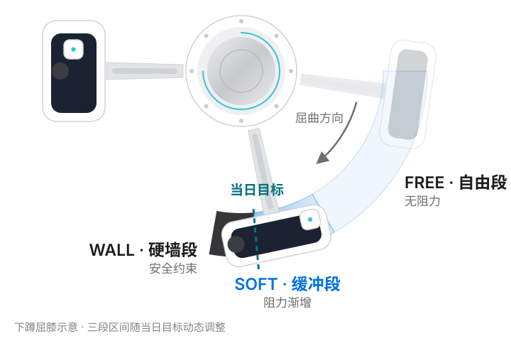

01 · Wearable
支具
采集 · 力反馈
双 IMU 采集膝角，关节电机输出力反馈——与身体接触的唯一终端。
感知膝角，主动施力。
给独自康复的人，多一层引导与保护。


大小腿环均为开合式结构：打开穿入，FIDLOCK 磁扣自动吸合，旋转即锁紧——术后屈膝受限、弯腰不便时，单手也能完成。磁吸是这副支具的统一设计语言：腿环如此，IMU 模块亦然。
传统单 IMU 角度估计在动态下漂移严重。使用双 IMU 与重力向量法重建膝关节屈曲角度，零位校准抵消装配误差，抗漂移特性保证长时训练稳定。
 框架触点 · 磁吸对位
IMU 模块 · JY901S
框架触点 · 磁吸对位
IMU 模块 · JY901S
IMU 模块内置 JY901S 九轴传感器，通过磁吸对位 + Pogo pin 触点吸附在支具框架上——吸上即连，取下即走。进入后期功能期、不再需要电机主动助力时，它可吸附在绑带上作为独立穿戴传感器，继续记录膝关节角度——硬件形态也随康复阶段递减。
双 IMU 采集膝角，关节电机输出力反馈——与身体接触的唯一终端。
膝角融合与位置环运算，RS485 直驱电机；PyQt6 仪表盘实时监测与调参。
训练计划、阶段状态与总结回顾——屏幕作为反思通道，不在动作中打扰。
训练中的轻触觉反馈——安全事件多通道冗余的一环。
 宇树 Go-M8010-6
宇树 Go-M8010-6
宇树 Go-M8010-6 关节电机与膝关节同轴直驱——无绳轮、无连杆，力的方向与屈伸完全一致。上位机经 RS485 / RIS 协议直接运行位置环，输出经三段虚拟墙调制：电机给出的是边界与引导，而不是替你完成动作。

关节电机配合位置环，把屈膝角度空间切成三段：自由段无阻力、缓冲段阻力渐增、硬墙段强约束。角度墙始终略高于当日目标，既给挑战空间，又守住安全边界。任何主动施力都可被身体轻易抵抗。
阶段如何调节这堵墙 →
PyQt6 仪表盘承担电机直驱与力反馈调试：黄色电机角与青色 IMU 膝角双曲线实时对比，FREE / SOFT / WALL 区状态随动作点亮，System Health 面板监控双 IMU、电机温度与漂移。
虚拟墙与急停构成硬件底线，缓停与降阶构成软件判定。疼痛跨阈值即可单次触发保护——这是医学安全底线，不需累积。